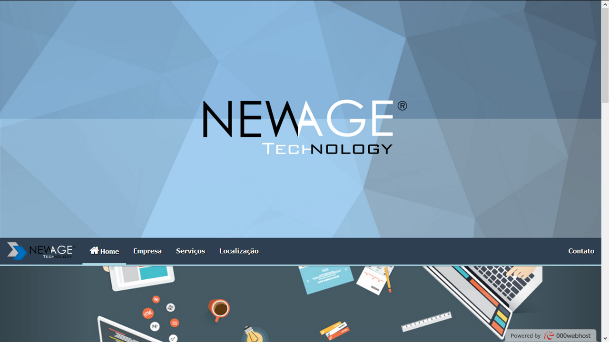

NewAge
A NewAge foi um projeto feito em equipe durante um ano divido entre aprendizado e construção, tendo sido desenvolvido no periodo do terceiro ano do colégio, como TCC, neste projeto foram confeccionados um sistema de gerenciamento do setor de manutenção de uma empresa de onibus M.A.B, dentro deste existia o aplicativo principal e seus periféricos, além de banco de dados integrado, e do próprio conjunto do sistema, também foi desenvolvido o site:
NewAgeTechnology/000webhostapp.com